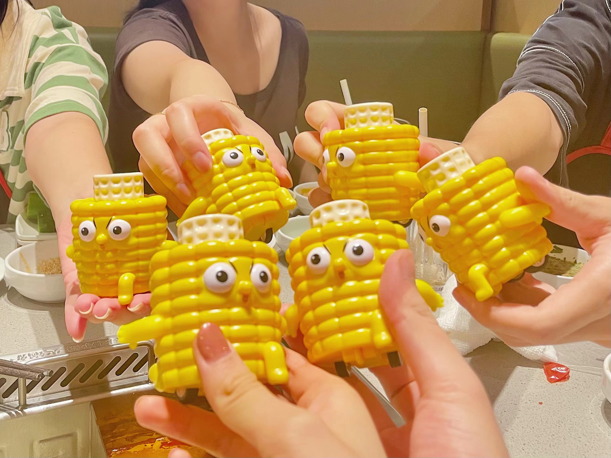
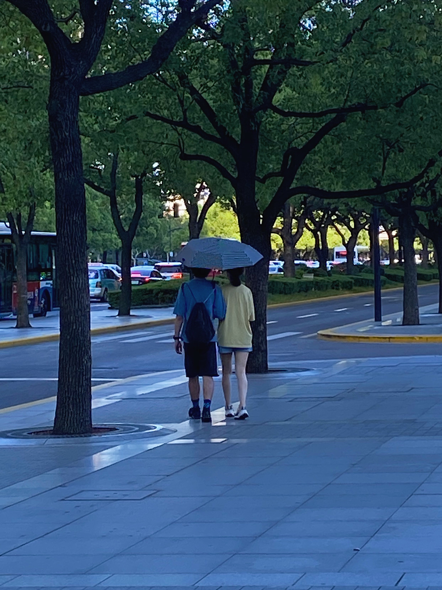

22-08-06
以前，她总是说我和朋友出去玩的时候不带她。今年，舔狗之家的团建日正巧遇上七夕，算是圆了她的一个小愿望。这是我们第一次以情侣的身份出现在高中同学视野里。
她答应我的时候非常开心爽快，但是到了见面的那一天早上，她却表现得非常紧张。她反复问我，那些女孩子会不会爱她，在卫生间把自己的妆补了一遍又一遍。而实际上，我是更紧张的那个。我担心她会表现得和我非常疏远、担心她与高中同学插不上话，我在群里问了一遍又遍大家是否欢迎她，不过事实上我的担心是多余的。等她补妆的时候，我看到一个黑色的身影很滑稽地窜上了电梯，嘴里发出猴子般的嬉笑——啊，原来是李某！由于这个画面太过搞笑，所以我决定记下来。
八佰伴的场景把我的思绪拉回高中，我看到那个跨越浦东南路的天桥，那个她说她高中每天放学必走的天桥。为了避开同学，她会走那条没什么人走的小路，所以她不得不走天桥。而我有幸和她走过三次天桥，第一次是她约我放学一起去看电影，第二次是我们去参加综评的培训，第三次是我们交往后的故地重游。我依旧难以置信，那个高三的周五下午，我座位的左后方传来她的声音：“你放学有空吗？要不要一起去看电影？”，我想起来，这似乎是我们5月夜晚许下的约定。我立刻跑到10班跟zmf说我一会儿不来踢球了，然后我就和她一起走了那条小路。那是我第一次和她回家，第一次和她走上那个天桥，她说这个天桥风景很好，看到八佰伴大屏幕上的画面让她感觉人生很有希望。
牵着她的手的感觉是很奇妙的，尤其是在高中同学面前。我发现她很融入舔狗之家，甚至比我说的话还要多，这让我很放心。我给她撑伞，喂她吃东西，玩uno的时候偷偷看她牌，给她买好吃的，在朋友面前叫她宝贝，毫无保留地表现出我对她的喜欢，看她害羞又开心的样子。她比以前更加可爱，她会在我耳边发出很嗲的声音，会在玩德国心脏病的时候故意骗我给她牌，虽然她依然很傲娇。那天我偷偷在队伍的最后亲了她好多次，逐渐有点迷恋捉弄她的感觉。
虽然我嘱咐过他们不要提起我高中和其他女生的往事，但是聊到上头的张某还是没有忍住，看起来这让她很吃醋。她的确很善于掩饰自己的情绪，尽管是看到了一个不愿见到的人。她是我见过世界上最体贴、最温柔、最坚强的女孩子。不过，我同时也能看见她敏感、悲伤的一面，我想也许正是因为是我，她才愿意展现吧。
感谢舔狗之家的大家，让我们度过了一个意义非凡的七夕
我们一起撑伞伞
海底捞送的玉米玩具
嘿嘿
评论区